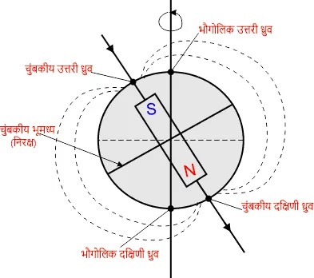
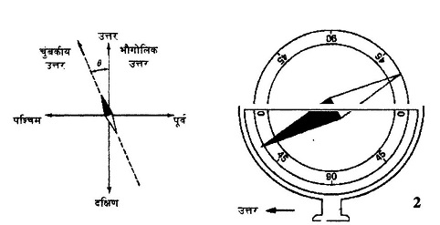

📘 Unit 3(C) - चुंबकीय पदार्थ
प्रश्न: चुंबकीय क्षेत्र के आधार पर पदार्थ कितने प्रकार के होते हैं?
चुंबकीय क्षेत्र के आधार पर पदार्थ तीन प्रकार के होते हैं –
- अनुचुंबकीय पदार्थ
- लोहचुंबकीय पदार्थ
- प्रति-चुंबकीय पदार्थ
प्रश्न: अनुचुंबकीय पदार्थ किसे कहते हैं? उनके गुण लिखिए।
वे पदार्थ जो चुंबकीय क्षेत्र में हल्के आकर्षित होते हैं उन्हें अनुचुंबकीय पदार्थ कहते हैं।
उदाहरण: एल्युमिनियम (Al), क्रोमियम (Cr), प्लेटिनम (Pt), मैग्नीशियम (Mg)।
गुण:
उदाहरण: एल्युमिनियम (Al), क्रोमियम (Cr), प्लेटिनम (Pt), मैग्नीशियम (Mg)।
गुण:
- इनका चुंबकीय आघूर्ण धनात्मक परन्तु बहुत छोटा होता है।
- चुंबकीय क्षेत्र हटाने पर इनका चुंबकीय प्रभाव समाप्त हो जाता है।
- इनकी चुंबकीय आपेक्षिक पारगम्यता \(\mu_r\) थोड़ी अधिक होती है (>1)।
- इनकी चुंबकीय संवेदनशीलता \(\chi\) धनात्मक और छोटी होती है।
प्रश्न: लोहचुंबकीय पदार्थ किसे कहते हैं? उनके गुण लिखिए।
वे पदार्थ जो चुंबकीय क्षेत्र में अत्यधिक आकर्षित होते हैं और जिनमें स्थायी चुंबकत्व आ जाता है उन्हें लोहचुंबकीय पदार्थ कहते हैं।
उदाहरण: लोहा (Fe), कोबाल्ट (Co), निकेल (Ni)।
गुण:
उदाहरण: लोहा (Fe), कोबाल्ट (Co), निकेल (Ni)।
गुण:
- इनका चुंबकीय आघूर्ण बहुत बड़ा होता है।
- चुंबकीय क्षेत्र हटाने पर भी इनमें चुंबकत्व बना रहता है (हिस्टैरिसिस गुण)।
- इनकी चुंबकीय आपेक्षिक पारगम्यता \(\mu_r\) बहुत बड़ी होती है (>1)।
- इनकी चुंबकीय संवेदनशीलता \(\chi\) धनात्मक तथा बहुत अधिक होती है।
- इनका प्रयोग स्थायी चुंबक बनाने में किया जाता है।
प्रश्न: प्रति-चुंबकीय पदार्थ किसे कहते हैं? उनके गुण लिखिए।
वे पदार्थ जो चुंबकीय क्षेत्र में हल्के विकर्षित होते हैं उन्हें प्रति-चुंबकीय पदार्थ कहते हैं।
उदाहरण: तांबा (Cu), चाँदी (Ag), सोना (Au), बिस्मथ (Bi)।
गुण:
उदाहरण: तांबा (Cu), चाँदी (Ag), सोना (Au), बिस्मथ (Bi)।
गुण:
- इनका चुंबकीय आघूर्ण ऋणात्मक और बहुत छोटा होता है।
- चुंबकीय क्षेत्र हटाने पर इनका प्रभाव पूरी तरह समाप्त हो जाता है।
- इनकी चुंबकीय आपेक्षिक पारगम्यता \(\mu_r\) थोड़ी कम होती है (<1)।
- इनकी चुंबकीय संवेदनशीलता \(\chi\) ऋणात्मक और छोटी होती है।
प्रश्न: अनुचुंबकीय, लोहचुंबकीय तथा प्रति-चुंबकीय पदार्थ में अंतर बताइए।
| क्रमांक | अनुचुंबकीय पदार्थ | लोहचुंबकीय पदार्थ | प्रति-चुंबकीय पदार्थ |
|---|---|---|---|
| 1 | इनकी चुंबकीय पारगम्यता एक से थोड़ी अधिक होती है। | इनकी चुंबकीय पारगम्यता एक से बहुत अधिक होती है। | इनकी चुंबकीय पारगम्यता एक से थोड़ी कम होती है। |
| 2 | इनकी चुंबकीय संवेदनशीलता (χ) धनात्मक और छोटी होती है। | इनकी चुंबकीय संवेदनशीलता (χ) धनात्मक और बहुत अधिक होती है। | इनकी चुंबकीय संवेदनशीलता (χ) ऋणात्मक और छोटी होती है। |
| 3 | ये बाहरी चुंबकीय क्षेत्र को अल्प आकर्षित करते हैं। | ये बाहरी चुंबकीय क्षेत्र को प्रबल रूप से आकर्षित करते हैं। | ये बाहरी चुंबकीय क्षेत्र को प्रतिकर्षित करते हैं। |
| 4 | उदाहरण: प्लैटिनम, मैंगनीज। | उदाहरण: लोहा, कोबाल्ट, निकेल। | उदाहरण: तांबा, सोना, चाँदी, जस्ता। |
प्रश्न: नरम लोहा और स्टील में अंतर लिखिए।
| क्रमांक | नरम लोहा | स्टील |
|---|---|---|
| 1 | इसे आसानी से चुंबकीय बनाया जा सकता है। | इसे चुंबकीय बनाने में कठिनाई होती है। |
| 2 | यह अस्थायी चुंबक के लिए उपयुक्त है। | यह स्थायी चुंबक के लिए उपयुक्त है। |
| 3 | चुंबकीयता शीघ्र उत्पन्न होती है और शीघ्र नष्ट हो जाती है। | चुंबकीयता धीरे-धीरे उत्पन्न होती है और लंबे समय तक बनी रहती है। |
| 4 | ह्रास बहुत कम होता है। | ह्रास अधिक होता है। |
| 5 | उपयोग : विद्युत चुंबक, ट्रांसफार्मर की कोर, रिले आदि। | उपयोग : स्थायी चुंबक, कम्पास सुई, मोटर आदि। |
प्रश्न: क्यूरी ताप किसे कहते हैं?
वह तापमान जिस पर लोहचुंबकीय पदार्थ अपनी लोहचुंबकत्व की गुण खो देता है और अनुचुंबकीय बन जाता है, क्यूरी ताप कहलाता है।
उदाहरण:
उदाहरण:
- लोहा → 770°C
- निकेल → 360°C
- कोबाल्ट → 1150°C
प्रश्न: अवशिष्ट चुंबकत्व, धारणशीलता, निष्क्रिय हानि तथा शैथिल्य हानि से क्या अभिप्राय है?
- अवशिष्ट चुंबकत्व: चुंबकीय क्षेत्र हटाने के बाद पदार्थ में शेष बचा चुंबकत्व अवशिष्ट चुंबकत्व कहलाता है।
- धारणशीलता: वह गुण जिसके कारण कोई पदार्थ चुंबकीय क्षेत्र हटने पर भी कुछ मात्रा में चुंबकत्व बनाए रखता है, धारणशीलता कहलाता है।
- निष्क्रिय हानि: चुंबकत्व को बार-बार बदलते समय चुंबकीय पदार्थ द्वारा उष्मा के रूप में खोई गई ऊर्जा को निष्क्रिय हानि कहते हैं।
- शैथिल्य हानि: बदलते चुंबकीय क्षेत्र में चालक के भीतर उत्पन्न धारा (एडी करंट) के कारण उत्पन्न ऊष्मा से हुई ऊर्जा हानि को शैथिल्य हानि कहते हैं।
प्रश्न: निम्न को परिभाषित करो — चुंबकीय अक्ष, चुंबकीय याम्योत्तर, चुंबकीय निरक्ष, चुंबकीय ध्रुव, भौगोलिक अक्ष, भौगोलिक याम्योत्तर।

- चुंबकीय अक्ष: पृथ्वी के चुंबकीय उत्तर एवं दक्षिण ध्रुवों को मिलाने वाली काल्पनिक रेखा को चुंबकीय अक्ष कहते हैं।
- चुंबकीय याम्योत्तर: पृथ्वी की सतह पर वह काल्पनिक तल, जिसमें चुंबकीय अक्ष एवं ऊर्ध्वाधर रेखा स्थित होती है, उसे चुंबकीय याम्योत्तर कहते हैं।
- चुंबकीय निरक्ष: पृथ्वी की सतह पर वह रेखा, जहाँ चुंबकीय सुई क्षैतिज स्थिति में रहती है और झुकाव शून्य होता है, चुंबकीय निरक्ष कहलाती है।
- चुंबकीय ध्रुव: पृथ्वी की सतह पर वे स्थान, जहाँ चुंबकीय सुई का झुकाव \(90^\circ\) होता है, उन्हें चुंबकीय ध्रुव कहते हैं।
- भौगोलिक अक्ष: पृथ्वी के उत्तर एवं दक्षिण ध्रुवों को मिलाने वाली काल्पनिक रेखा को भौगोलिक अक्ष कहते हैं। यही पृथ्वी की घूर्णन धुरी है।
- भौगोलिक याम्योत्तर: पृथ्वी की सतह पर वह काल्पनिक तल, जिसमें भौगोलिक अक्ष एवं ऊर्ध्वाधर रेखा स्थित होती है, उसे भौगोलिक याम्योत्तर कहते हैं।
प्रश्न: नमन कोण तथा दिकपात का कोण किसे कहते हैं?
- नमन कोण: किसी स्थान पर पृथ्वी के चुम्बकीय क्षेत्र की परिणामी तीव्रता क्षैतिज के साथ जो कोण बनाती है, उसे नमन कोण कहते हैं। इसे \(\theta\) द्वारा दर्शाते हैं।
- दिकपात का कोण: किसी स्थान पर चुम्बकीय याम्योत्तर और भौगोलिक याम्योत्तर के बीच के कोण को दिकपात का कोण कहते हैं। भूमध्य रेखा पर यह \(0^\circ\) होता है तथा चुंबकीय ध्रुवों पर यह \(90^\circ\) होता है।

प्रश्न: पृथ्वी के भू-चुंबकीय तत्वों में संबंध स्थापित कीजिए।

क्षैतिज घटक,
$$
H = I\cos\theta \quad \text{....(1)}
$$
ऊर्ध्वाधर घटक,
$$
V = I\sin\theta \quad \text{....(2)}
$$
समी. (2) में (1) का भाग देने पर—
$$
\frac{V}{H} = \frac{I\sin\theta}{I\cos\theta}
$$
$$
\frac{V}{H} = \tan\theta
$$
समी. (1) व (2) को वर्ग करके जोड़ने पर—
$$
H^2 + V^2 = I^2\cos^2\theta + I^2\sin^2\theta
$$
$$
H^2 + V^2 = I^2(\cos^2\theta + \sin^2\theta)
$$
$$
H^2 + V^2 = I^2
$$
प्रश्न: निम्न को समझाइए — सम दिक्पाती रेखाएँ, शून्य दिक्पाती रेखाएँ, सम नमन रेखाएँ, अनत या चुम्बकीय निरक्ष रेखाएँ, सम बल रेखाएँ।
- सम दिक्पाती रेखाएँ: ऐसे स्थानों को मिलाने वाली रेखाएँ, जहाँ दिक्पात कोण का मान समान होता है, समदिक्पाती रेखाएँ कहलाती हैं।
- शून्य दिक्पाती रेखाएँ: शून्य दिक्पात कोण वाले स्थानों को मिलाने वाली रेखाएँ शून्य दिक्पाती रेखाएँ कहलाती हैं।
- सम नमन रेखाएँ: समान नमन कोण वाले स्थानों को मिलाने वाली रेखाएँ सम नमन रेखाएँ कहलाती हैं।
- अनत या चुम्बकीय निरक्ष रेखाएँ: शून्य नमन कोण वाले स्थानों को मिलाने वाली रेखाएँ अनत या चुम्बकीय निरक्ष रेखाएँ कहलाती हैं।
- सम बल रेखाएँ: ऐसे स्थानों को मिलाने वाली रेखाएँ, जहाँ चुम्बकीय क्षेत्र के क्षैतिज घटक \(H\) का मान समान होता है, सम बल रेखाएँ कहलाती हैं।
बहुविकल्पीय प्रश्न (MCQ)
- पृथ्वी के चुंबकीय क्षेत्र का कारण है – पृथ्वी के भीतर विद्युत धाराएँ
- पृथ्वी के चुंबकीय क्षेत्र की तीव्रता लगभग होती है – \(10^{-4}\ T\)
- पृथ्वी का चुंबकीय विषुवत वृत्त कहलाता है – चुंबकीय विषुवत वृत्त
- चुंबकीय द्विध्रुव आघूर्ण का मात्रक है – A·m²
- बार मैग्नेट के समान होता है – धारा वलय
- चुंबकीय आघूर्ण M और क्षेत्र तीव्रता B पर लगने वाला बलाघूर्ण है – \(MB\sin\theta\)
- चुंबकीय फ्लक्स का SI मात्रक है – वेबर (Wb)
- 1 Tesla = 1 Wb/m²
- पृथ्वी का चुंबकीय विक्षेप कोण किसके बीच का कोण है? – भौगोलिक उत्तर व चुंबकीय उत्तर
- मुक्त चुंबकीय ध्रुव प्रकृति में – नहीं पाए जाते
- चुंबकीय रेखाएँ आपस में – कभी नहीं काटतीं
- चुंबकीय आघूर्ण निर्भर करता है – धारा वलय का क्षेत्रफल, धारा, कुंडली की संख्या
- चुंबकीय उपग्रह का उपयोग किया जाता है – पृथ्वी का चुंबकीय क्षेत्र मापने हेतु
- चुंबकीय ध्रुवीयता का नियम है – ध्रुव अकेले नहीं होते
- एक आदर्श चुंबक में उत्तरी व दक्षिणी ध्रुव – हमेशा युग्म में पाए जाते हैं।
रिक्त स्थान भरें
- चुंबकीय आघूर्ण = धारा × क्षेत्रफल
- पृथ्वी के चुंबकीय क्षेत्र की तीव्रता लगभग \(10^{-4}\ T\) होती है।
- चुंबकीय फ्लक्स का मात्रक वेबर (Wb) होता है।
- ध्रुवों पर नमन कोण शून्य होता है।
- भूमध्यरेखा पर नमन कोण \(90^\circ\) होता है।
सही / गलत
- चुंबकीय बल रेखाएँ एक-दूसरे को काटती हैं – गलत
- पृथ्वी का चुंबकीय क्षेत्र केवल घूर्णन के कारण है – गलत
- बार मैग्नेट को धारा वलय के तुल्य माना जा सकता है – सही
- चुंबकीय ध्रुव सदैव युग्म में पाए जाते हैं – सही
- चुंबकीय फ्लक्स का मात्रक टेस्ला है – गलत (सही वेबर है)